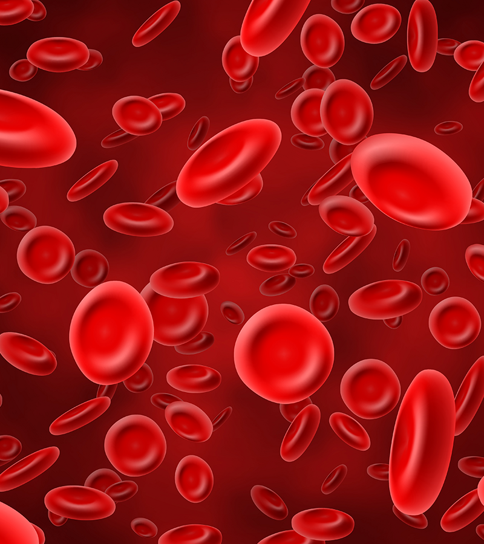

человек может говорить тысячи слов о любви, но все они ничего не значат, если вы не ловите на себе такои вегляд: человек может говорить тысячи слов о любви, но все они ничего не значат, если вы не ловите на себе такои вегляд: человек может говорить тысячи слов о любви, но все они ничего не значат, если вы не ловите на себе такои вегляд: человек может говорить тысячи слов о любви, но все они ничего не значат, если вы не ловите на себе такои вегляд: человек может говорить тысячи слов о любви, но все они ничего не значат, если вы не ловите на себе такои вегляд: человек может говорить тысячи слов о любви, но все они ничего не значат, если вы не ловите на себе такои вегляд: человек может говорить тысячи слов о любви, но все они ничего не значат, если вы не ловите на себе такои вегляд: человек может говорить тысячи слов о любви, но все они ничего не значат, если вы не ловите на себе такои вегляд: человек может говорить тысячи слов о любви, но все они ничего не значат, если вы не ловите на себе такои вегляд: человек может говорить тысячи слов о любви, но все они ничего не значат, если вы не ловите на себе такои вегляд:
Outros Serviços
DNA
Sexagem Fetal
Exame Toxicológico para Motorista - CNH

Hormônios
Toxicologia
Líquido Seminal
Bioquímica
Urinálises
Parasitologia
Imunologia
Microbiologia
